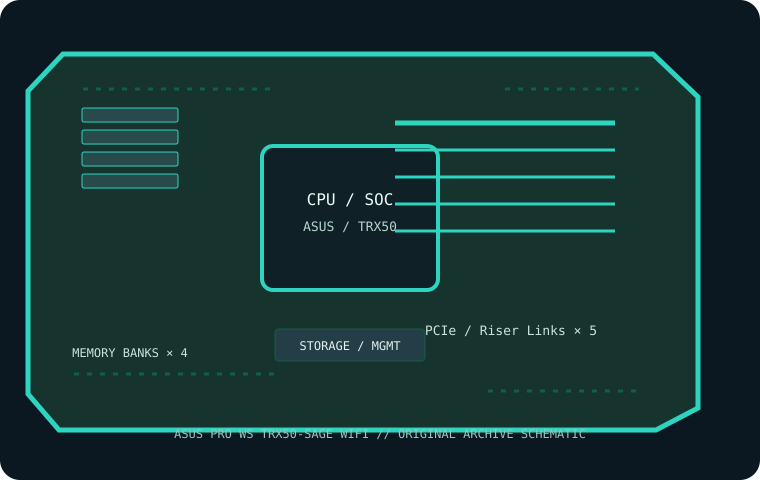

[ INDIVIDUAL COMPONENT // MOTHERBOARDS ]
ASUS Pro WS TRX50-SAGE WIFI
SSI-CEB sTR5 / TRX50 platform for supported AMD Ryzen Threadripper 7000 and Threadripper PRO 7000 series processors. This page records the exact printed model and revision policy with manufacturer references.

MODEL / REVISION: The manufacturer does not distinguish a retail PCB revision in the model name; check the silkscreen and use the matching ASUS manual/support files.
Specifications
| Exact model / revision | ASUS Pro WS TRX50-SAGE WIFI — The manufacturer does not distinguish a retail PCB revision in the model name; check the silkscreen and use the matching ASUS manual/support files. |
|---|---|
| CPU and socket | One AMD sTR5 socket; Ryzen Threadripper 7000 and Threadripper PRO 7000 WX CPU compatibility depends on the ASUS CPU list and BIOS. |
| Chipset / platform | AMD TRX50. |
| Board size | SSI-CEB, 305 × 267 mm (12 × 10.5 in). Confirm chassis SSI-CEB clearance and mounting. |
| Memory / ECC / registered | Four DDR5 ECC Registered DIMM (RDIMM) sockets, quad-channel; ECC RDIMM only. Capacity, speed and rank limits depend on CPU and validated DIMMs; check ASUS QVL. |
| PCIe / lanes | Three CPU-connected PCIe 5.0 x16-length slots and two PCIe 4.0 x16-length slots; electrical widths, availability and sharing vary by processor and slot population. Follow the manual lane table. |
| Storage | Three M.2 sockets (PCIe 5.0/4.0 x4 per position), four SATA 6 Gb/s ports and one SlimSAS connector; verify CPU/slot/drive sharing and RAID support in the manual. |
| Networking / BMC | Marvell 10GbE and Intel 2.5GbE wired LAN, onboard Wi-Fi 7 / Bluetooth; no integrated BMC. ASUS ASMB11-iKVM management card is optional if supported by the selected configuration. |
| Firmware / compatibility | Use the ASUS CPU support list and BIOS release notes for the exact sTR5 CPU. Do not infer support from socket fit. Populate four-channel RDIMM according to the manual/QVL; clear CMOS and update only with the model-specific firmware. IPMI requires optional compatible management hardware. |
Compatibility and revision notes
Use the ASUS CPU support list and BIOS release notes for the exact sTR5 CPU. Do not infer support from socket fit. Populate four-channel RDIMM according to the manual/QVL; clear CMOS and update only with the model-specific firmware. IPMI requires optional compatible management hardware.
Before installation, verify the physical revision and assembly label, CPU support list and minimum BIOS; confirm the exact memory type (UDIMM versus registered DIMM), channel population, chassis form factor, PCIe lane routing and storage connector modes against the linked vendor manual. A mechanically compatible socket does not guarantee CPU, firmware, ECC or lane compatibility.
Preservation and service
Record BIOS and BMC versions, serial and MAC labels, installed processors and DIMM part numbers, risers/cables, and test conditions. Use ESD-safe handling, correct socket procedure and chassis airflow. Do not cross-flash firmware from a similarly named board or revision.
Sources & further reading
- ASUS — Pro WS TRX50-SAGE WIFI technical specificationsManufacturer reference for the exact board model; use its support/QVL/manual details to verify population and compatibility.
- ASUS — Pro WS TRX50-SAGE WIFI manuals and support documentsManufacturer reference for the exact board model; use its support/QVL/manual details to verify population and compatibility.
Manufacturer model-specific references take precedence. Recheck CPU support, QVL, lane tables and current firmware for the printed board revision before service.